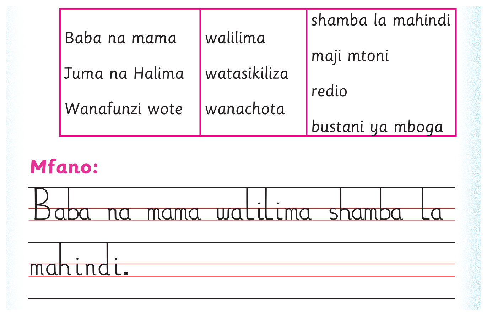

2. Andika sentensi kumi sahihi kwa mwandiko wa chapa wenye vikonyo au Mwandiko wa Breli. Tumia maneno yaliyomo kwenye kisanduku hiki:
2. Andika sentensi kumi sahihi kwa mwandiko wa chapa
wenye vikonyo/Mwandiko wa Breli. Tumia maneno yaliyomo kwenye
kisanduku hiki:
2. Andika sentensi kumi sahihi kwa mwandiko wa chapa wenye vikonyo au Mwandiko wa Breli. Tumia maneno yaliyomo kwenye kisanduku hiki; tumia eneo la kuandikia, kibodi au Breli.
3. Andika sentensi kumi sahihi kwa mwandiko wa chapa wenye vikonyo au Mwandiko wa Breli. Tumia maneno yaliyomo kwenye jedwali lifuatalo:
3. Andika sentensi kumi sahihi kwa mwandiko wa chapa
wenye vikonyo/Mwandiko wa Breli. Tumia maneno yaliyomo kwenye
jedwali lifuatalo:
3. Andika sentensi kumi sahihi kwa mwandiko wa chapa wenye vikonyo au Mwandiko wa Breli. Tumia maneno yaliyomo kwenye jedwali lifuatalo; tumia eneo la kuandikia, kibodi au Breli.

Safu ya kwanza. Baba na mama. Juma na Halima. Wanafunzi wote. Safu ya pili. walilima. watasikiliza. wanachota. Safu ya tatu. shamba la mahindi. maji mtoni. redio. bustani ya mboga. Mfano: Baba na mama walilima shamba la mahindi.